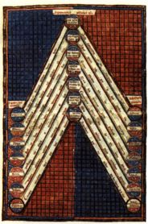
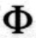
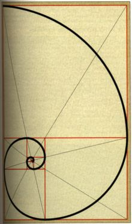
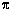
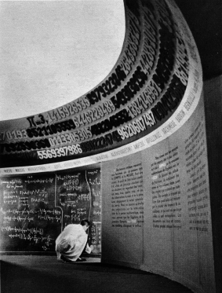

|
1) Les
chiffres « sacrés »
Les nombres et la vie
des hommes ont toujours été étroitement liés.
La numérologie structure ces liens en permettant de trouver les
nombres de l'activité, de l'hérédité, du destin,
ce qui se réfèrent au prénom, au nom et à la
date de naissance de chacun.
Dans ce cadre, il
existe des « bons » et des « mauvais » nombres
pour gagner au jeu, pour prendre des décisions,,, ; un bon nombre
pour l'un peut être mauvais pour un autre : 13, associé à
la Mort dans les tarots, peut signifier une fin éventuelle, mais
aussi la possibillité d'un renouveau, d'une renaissance, Dans les
civilisations orientales, le 9 et le 64 ont un rôle important fondé
sur toutes les combinaisons des huit éléments du Yijiing.
De même, le chiffre 7 a une importance dans la religion juive ; il
y est consideré comme sacré (le chandelier à sept
branches).

La gématrie
(étude des relations entre les chiffres et les hommes) de la kabbale
a développé des interprétations en rapprochant des
mots de même valeur numérique (valeur obtenue par l'addition
des nombres associés à chaque lettre de l'alphabet hébreu)
; ainsi peut-on associer « vin » et
« secret »
(In vino veritas). De tels rapprochements permettent des applications divinatoires
et diverses interprétations d'un même texte : la Bible en
particulier. On y lit : « Que le possesseur d'intelligence calcule
le nombre de la Bête! C'est un nombre d'homme. Son nombre est six
cent soixante-six! ». La gématrie a attribué ce
nombre à Attila, à Napoléon, et à d'autres
encore selon les époques...
2) Le nombre d'or
Il est souvent associé
au rectangle doré, très utilisé en architecture et
en peinture. Les bâtisseurs de cathédrales font souvent référence
à cette « divine proportion », jugée par beaucoup
comme un modèle d'équilibre et d'harmonie. Le Parthénon,
de nombreuses réalisations de Le Corbusier s'inscrivent dans des
rectangles dorés. Le rapport de la longueur à la largeur
d'un tel rectangle vaut environ 1,618, valeur approchée du nombre
d'or, noté :
Fait remarquable, si on supprime
le carré intérieur au rectangle, ayant la largeur pour côté,
on obtient un nouveau rectangle doré. Ce procédé sans
fin permet de construire une spirale dorée :

Le nombre d'or est aussi
présent dans la nature, comme cela ressort de la mesure de l'enroulement
des feuilles de tournesol autour de la tige ou de la spirale des ammonites,
entre autres. Ces observations renforcent chez certains l'idée platonicienne
d'un nombre préexistant et dont l'homme doit découvrir l'organisation,
le nombre d'or apparaissant comme un élément fondamental
qui « structure ». C'est pourquoi ce nombre a été
l'objet de nombreuses études et est fréquemment cité
dans divers domaines culturels ; au-delà de ces propriétés
numériques, algébriques ou géométriques,
il reste un modèle et un moyen de création artistique ou
esthétique.
3) Un nombre particulier
: 
Le nombre
résume une histoire des mathématiques vieille de 3000 ans
et qui touche aussi bien à la géométrie qu'à
l'algèbre. D'abord dans des problèmes de mesure, des Grecs
jusqu'au 17e siècle,
apparaît en terme de rapport entre le périmètre du
cercle et son diamètre. On peut en donner des valeurs approchées
assez précises, comme le proposait Archimède, en considérant
des polygones réguliers inscrits dans un même cercle et circonscrits
à celui-ci :
3 + 10/71 <
< 3 + 10/70
De nos jours, le développement
des ordinateurs permet d'effectuer les calculs donnant
avec des algorithmes plus performants. Cette « chasse aux décimales
» n'est pas seulement anecdotique ni une vérification a posteriori
de résultats algébriques bien établis ; par ailleurs,
on montre que les décimales du nombre
peuvent servir au même titre que certaines tables de nombres tirés
au hasard pour des études statistiques ou des simulations de phénomènes
physiques. De plus, ces calculs constituent aussi des tests de bon fonctionnement
pour les ordinateurs. En améliorant la connaissance quantitative
de ,
on n'éclaircit pas pour autant sa « nature ».

Salle ronde du Palais de la Découverte
(Paris), dont le plafond est décoré
par la suite des décimales de
.
|